↗
UI/UX · Figma
DriveEase — Vehicle Rental UI/UX
Designed user interfaces for a vehicle rental management experience.
FigmaUI design
View Figma project ↗
Portfolio For Metafour
I'm Md. Salman Farshe, a Computer Science and Engineering graduate with a software development background and a growing focus on user-centered UI/UX design.
I enjoy turning complex workflows into clear interfaces - bringing together user flows, visual hierarchy, reusable design patterns, and an understanding of how products are built.
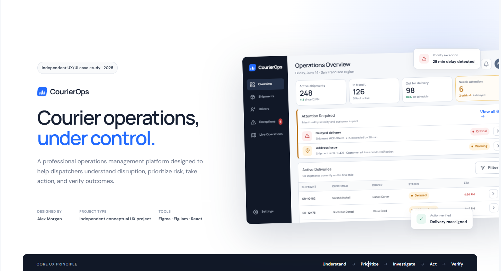
Computer Science & Engineering · American International University-Bangladesh
I’m interested in designing digital products that are visually clear, practical, and easy to use. My CSE background helps me consider both the user's task and the technical context behind an interface.
During my Academic Internship at Metafour Ltd. (February–April 2026), I rotated through Operations, QA, and Software Development. That experience gave me exposure to operational workflows, testing practices, and development processes—and inspired the courier-operations domain explored in this independent case study.
I am seeking a Junior UI/UX Designer opportunity where I can contribute, learn from feedback, and collaborate closely with product and development teams.
A conceptual UX/UI project exploring how courier operations controllers can identify delivery exceptions, understand shipment context, and take a clear next action.
The experience is organized around the controller’s core task: understand what needs attention, prioritize the issue, investigate the relevant context, act, and verify the result.
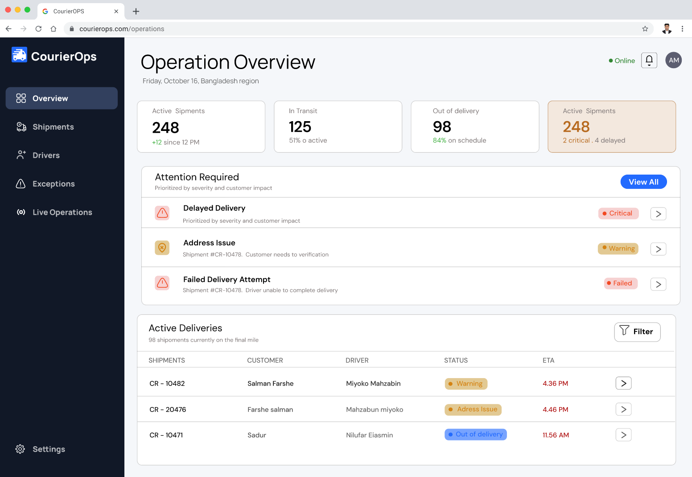
Controllers oversee many active shipments. When delivery issues occur, they need to identify the most urgent item and find its context without losing their place.
A status label alone is not enough. The interface should connect issue severity with shipment details, driver context, ETA, and relevant next steps.
Bring attention-worthy exceptions forward, connect them to detail views, and close the loop with visible resolution feedback.
This independent concept was informed by domain exposure during my Metafour internship and desk research into courier operations software and common logistics workflows. It is not an official Metafour product, nor does it claim to reproduce any confidential internal interface.
The work uses a proto-persona and illustrative shipment examples to structure design decisions. These are hypotheses for exploration—not findings from completed user interviews.
Courier operations controllers need a reliable way to identify, investigate, and resolve delivery exceptions while keeping shipment and driver context visible, because delays, address issues, and failed delivery attempts can otherwise be difficult to prioritize across many active shipments.
Responsible for monitoring shipments, coordinating drivers, and responding to delivery exceptions.
Spot urgent problems, understand what happened, choose an appropriate action, and keep stakeholders informed.
Clear severity, shipment timeline, assigned driver, ETA, action choices, and confirmation of what changed.
The primary journey connects the overview to an exception and returns the controller to a verified operational state.
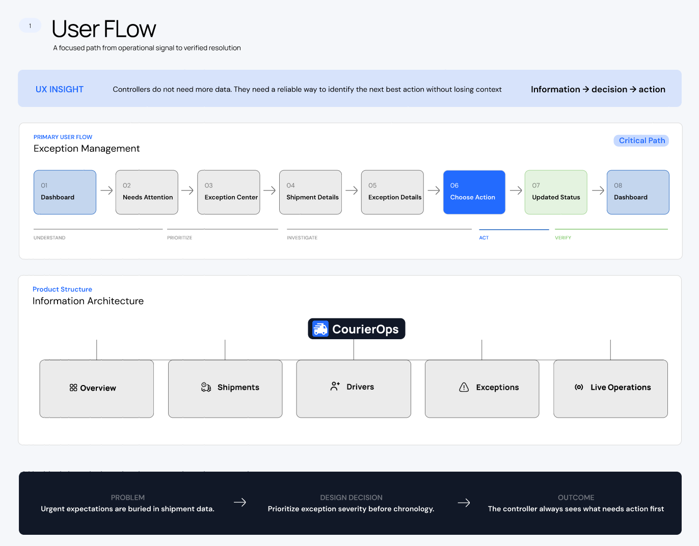
A dedicated “Attention Required” area makes urgent issues easier to spot than burying them among routine shipment data.
Shipment timeline, driver, location, reason, and ETA help the controller understand an issue before acting.
A resolution state shows the action outcome and updated assignment or notification status.
The visual language uses a restrained blue primary color for main actions, neutral surfaces for dense data, and semantic colors for statuses: green for success, amber for warning, and red for critical or failed states. Typography and spacing are intended to support quick scanning in an information-dense operations tool.
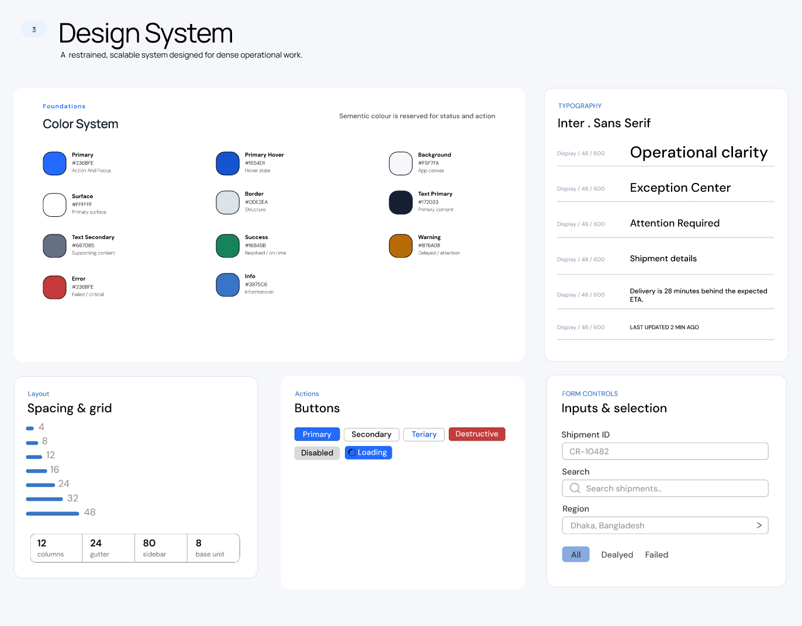
The next step is to test realistic tasks with representative operations users. Proposed evaluation criteria include whether users can locate a critical exception, explain the reason for a delay, choose the appropriate action, and confirm the final state. No usability test results or business-impact metrics are claimed at this stage.
Browse the project artifacts in sequence—from the user flow and wireframes to the design system and eight connected final UI screens. Select any image to view it larger.
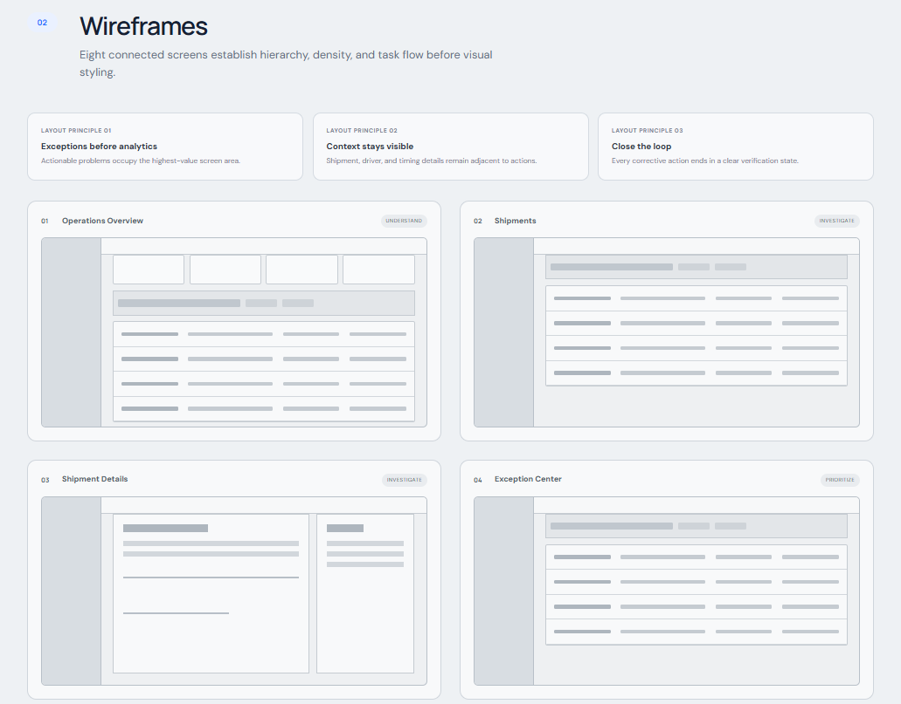
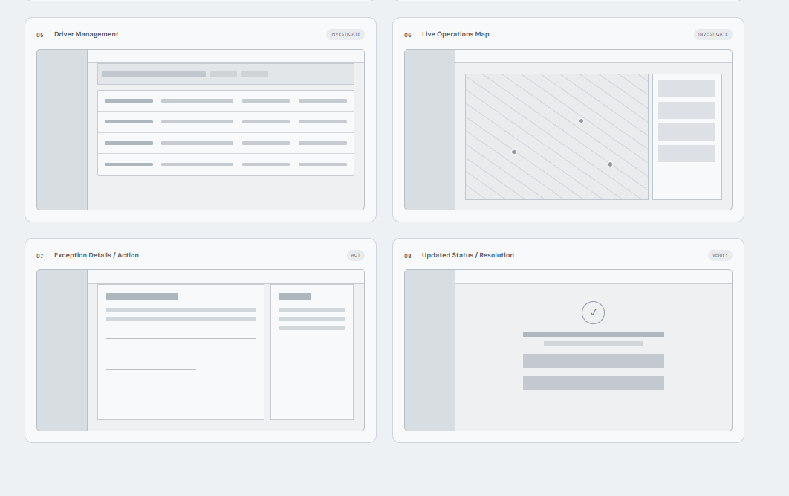
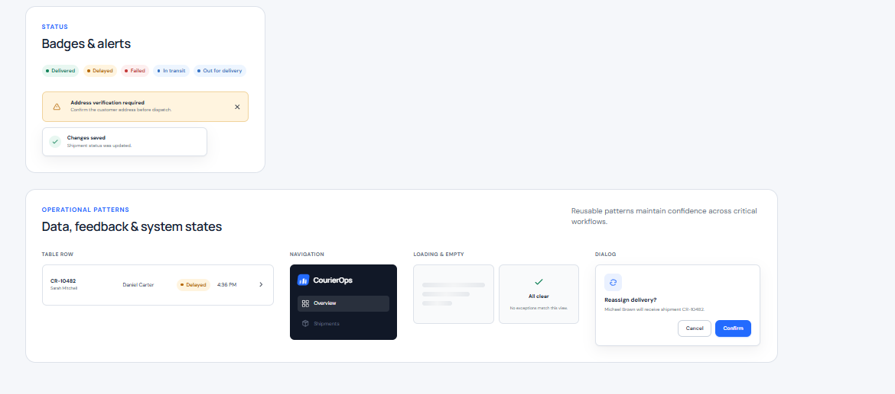
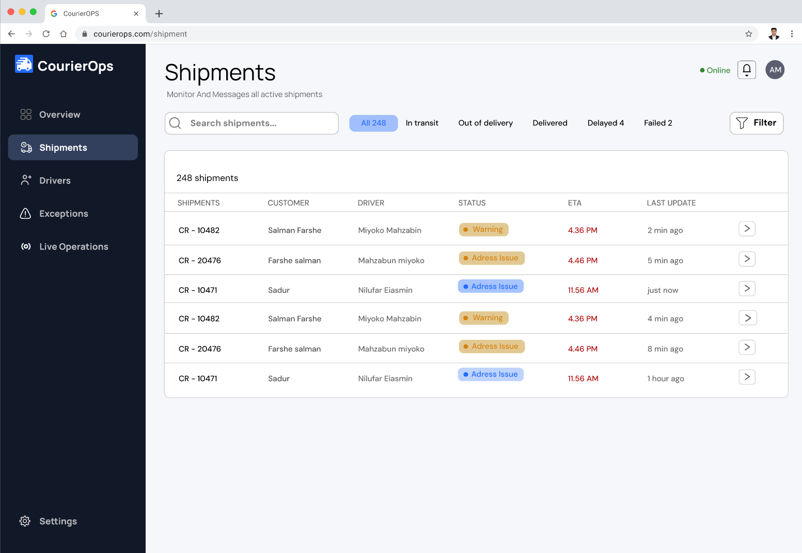
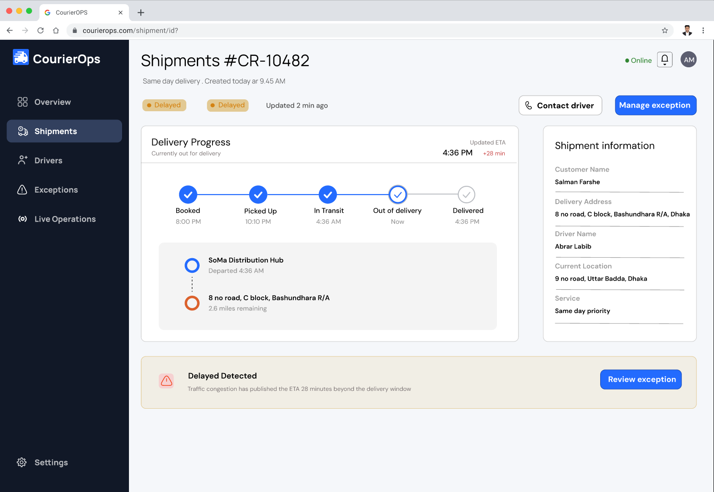
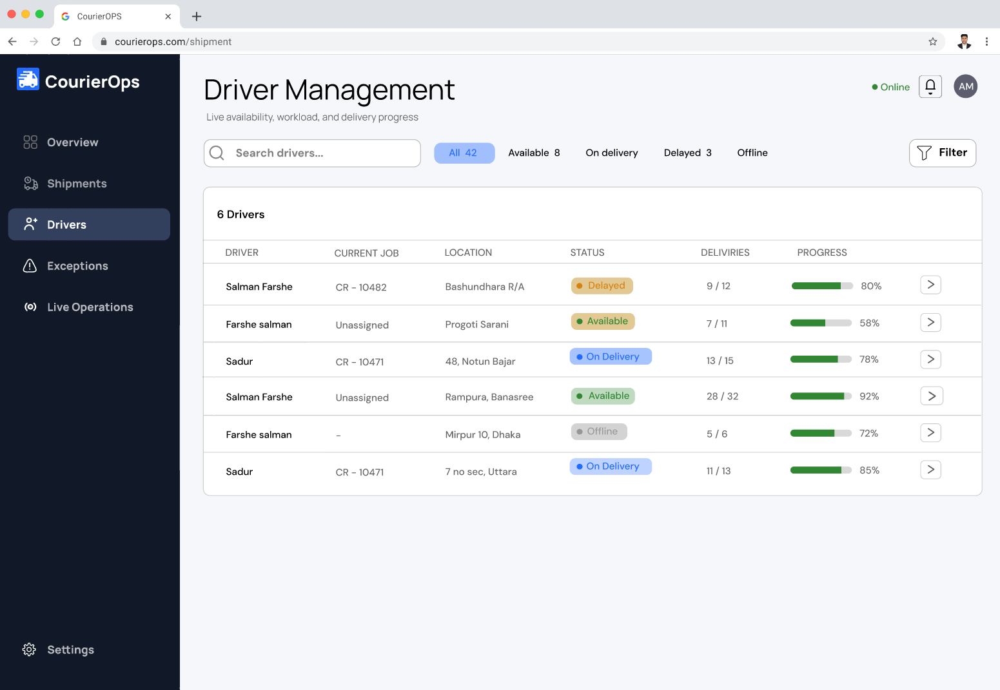
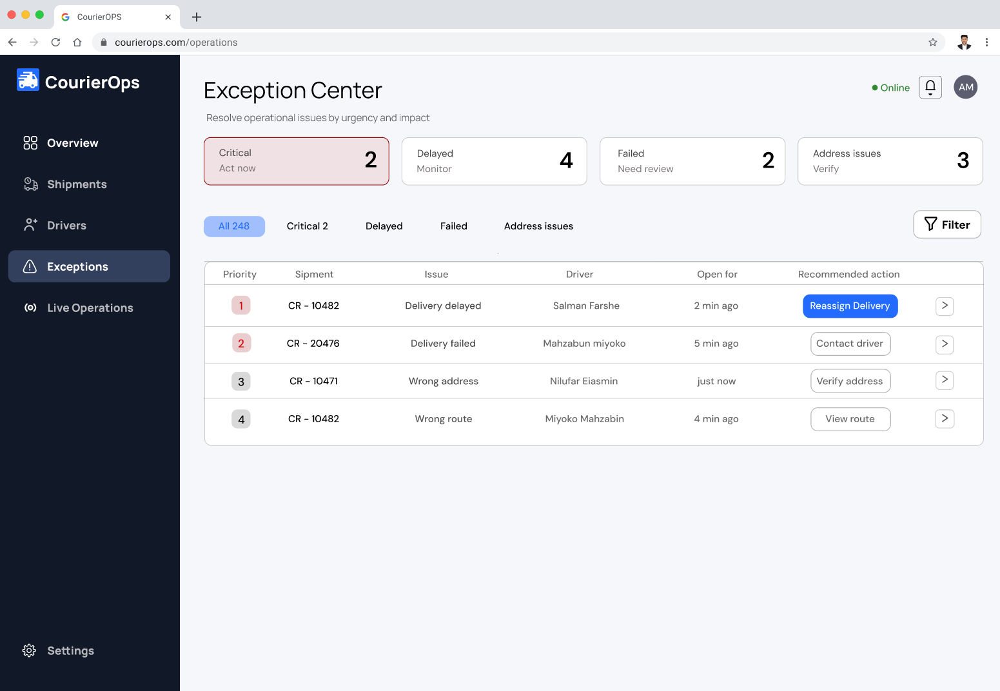
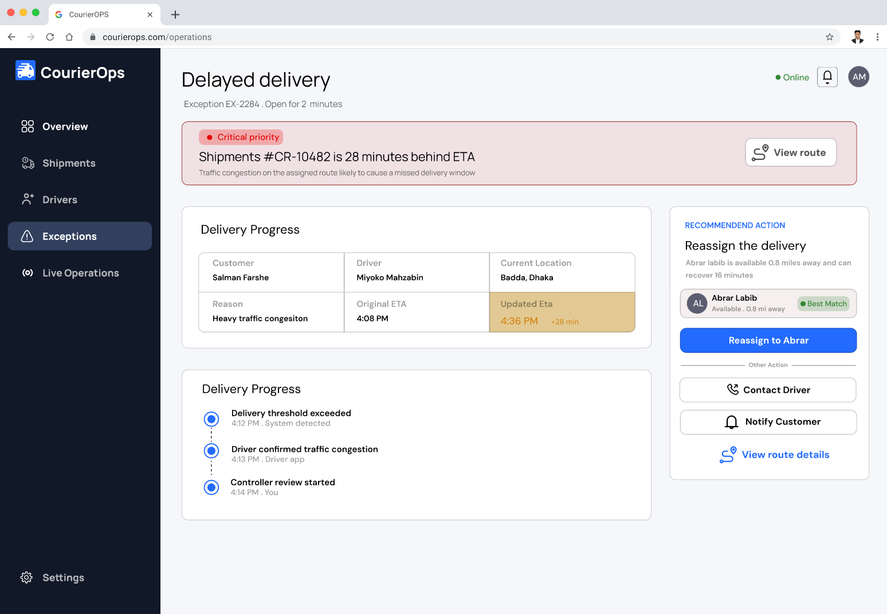
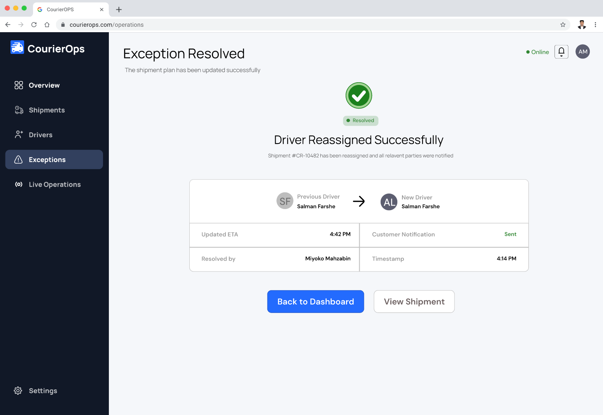
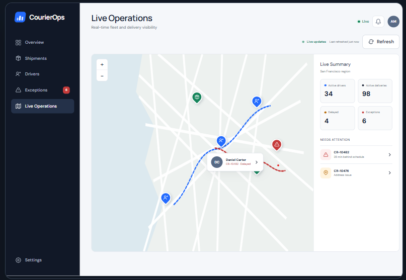
Tip: Use the filters to review each stage. Click an image to open the larger view; press Escape or click outside to close it.
The case study is structured to explain why the screens exist—not only what they look like.
Explore the domain, identify the primary user, define the problem, and record assumptions that require validation.
Map the information architecture and the exception-management flow before polishing screens.
Establish hierarchy, reusable components, status colors, layout patterns, and connected high-fidelity screens.
Prototype key tasks, test with representative users, record friction, and iterate based on evidence.
Based on my current CV. In an interview, I aim to demonstrate the skills I list with real examples from my work.
Figma, UI design, wireframing, prototyping, user flows, user-centered design, usability principles.
HTML, CSS, JavaScript, React, PHP, ASP.NET Core, and .NET Framework.
C++ (strong), C# (strong), Java (strong), with Python and R listed as good.
SQL and relational database experience, alongside MongoDB fundamentals.
Backend and full-stack development experience that supports collaboration with engineers.
Git/GitHub, RStudio, MATLAB, LaTeX, MS Office 365, and cross-functional workflow exposure.
A short overview of the background relevant to my design and development practice.
Rotated through Operations, QA, and Software Development; gained exposure to development and testing workflows and company operational processes.
American International University-Bangladesh · CGPA 3.94/4.00 · Major field: Information Systems.
Also received the Academic Excellence Scholarship at AIUB.
Co-author on a paper presented at the 8th IEOM Bangladesh International Conference (2025) and a paper accepted at ICCA 2026, as listed on my CV.
A mix of interface design concepts and software engineering projects from my CV.
Designed user interfaces for a vehicle rental management experience.
A travel-focused UI design concept created in Figma.
RESTful appointment system with booking, scheduling, patient-doctor management, filtering, and a structured N-tier architecture.
Vehicle rental management system using Spring Boot, React, and PostgreSQL.
Role-based healthcare management system with appointment, pharmacy, and diagnostics features.
Full-stack healthcare platform supporting patient, doctor, and hospital interactions.
Interactive boutique application with product browsing and order placement using OOP principles.
I’m open to connecting about junior UI/UX opportunities, design feedback, and collaboration with product and development teams.
Email me ↗